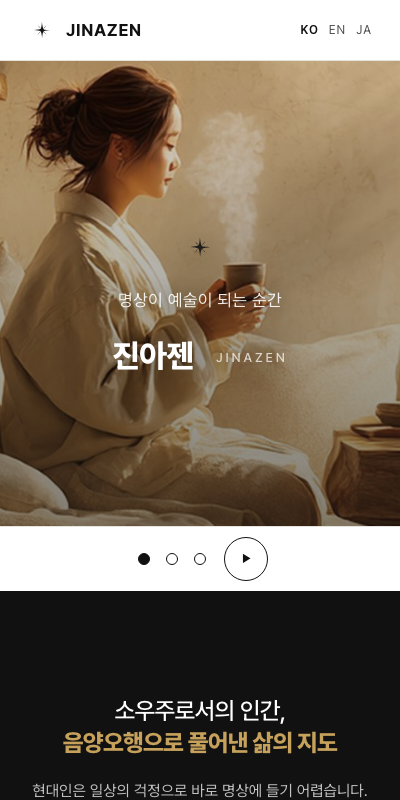
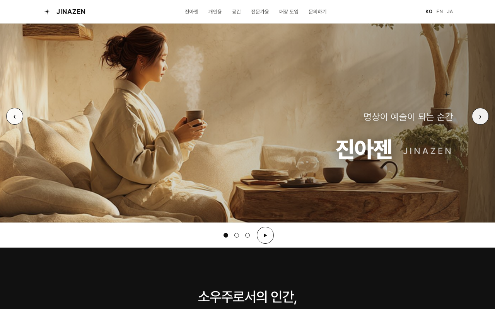
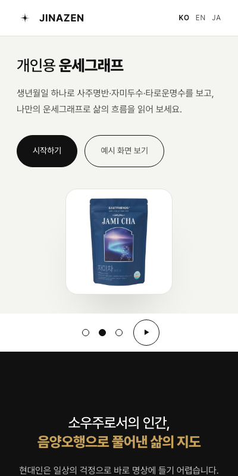
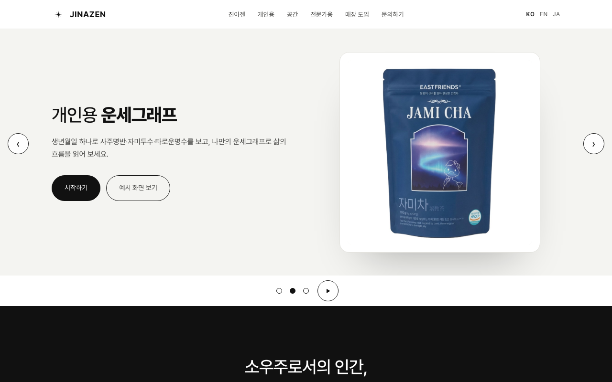
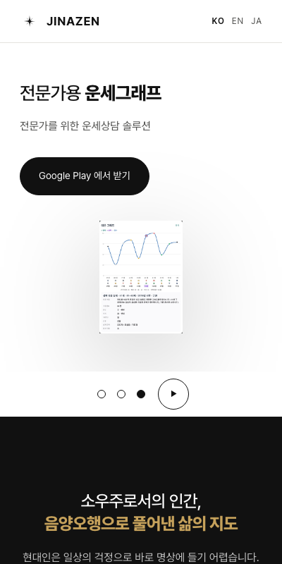
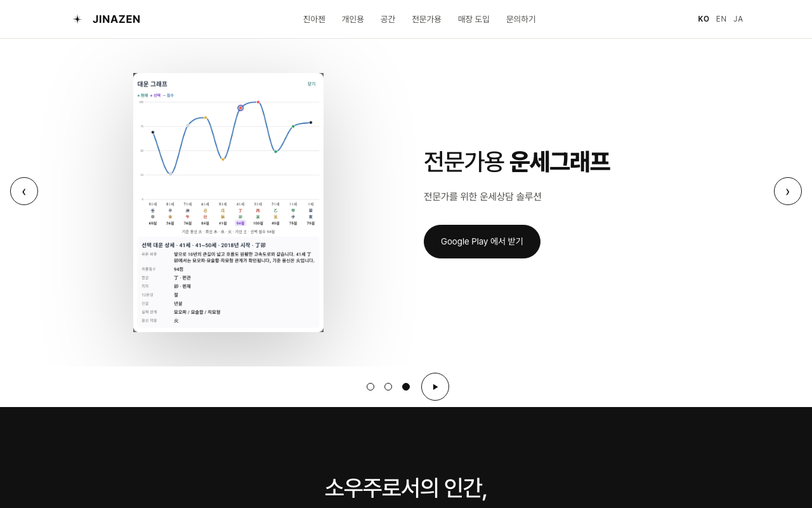
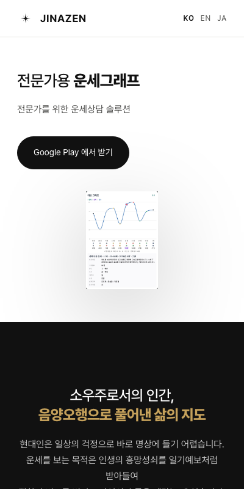
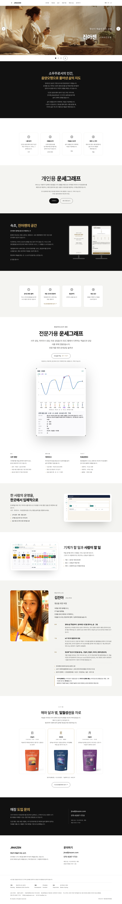

① 진아젠 — 단추 없음 · 이 화면의 h1
점 셋 · 멈춤 단추(44×44)가 첫 화면 안 — 폰 571/581px · PC 621/631px


② 개인용 운세그래프 — 시작하기 · 예시 화면 보기
한 줄 = 소유자 문안(SITE-44) · 그림은 {{그림 대기}} — 우선 자미차(홈페이지 차 사진)


③ 전문가용 운세그래프 — Google Play 에서 받기 (같은 창)
그림은 대운 그래프(site_01)


스크립트를 끈 상태 — ③ 까지 밀어서 보인다
점 · 멈춤 단추 · 화살표 · 자동 넘김이 없을 뿐 배너는 셋 다 있다

페이지 전체
https://jinazen.com/ — 위에서 아래로 끝까지
